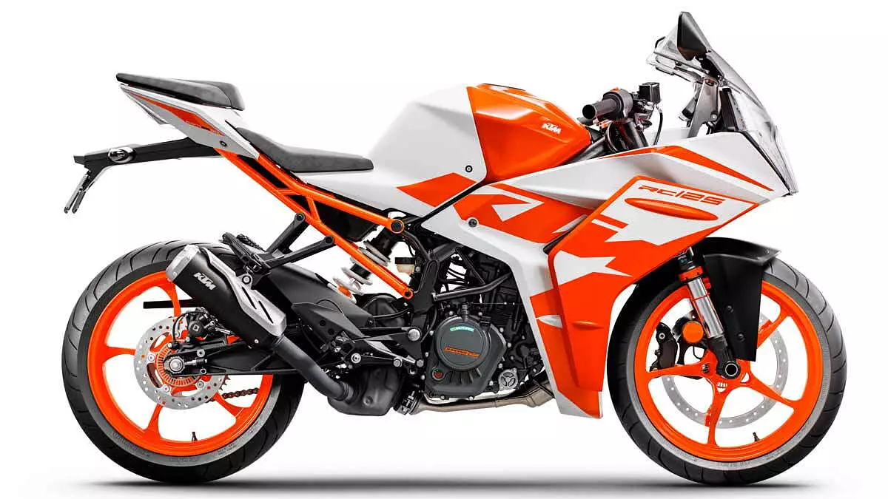

KTM Racing
KTM Racing AG — австрийский производитель мотоциклов, велосипедов и суперкаров.
Компания была основана в 1934 году инженером Хансом Трункенпольцем в городе Маттигхофен. Сначала это была металлообрабатывающая мастерская «Kraftfahrzeuge Trunkenpolz Mattighofen». Производство мотоциклов началось в 1954 году.
КТМ известен своими внедорожными мотоциклами, однако в последние годы расширяет производство дорожных мотоциклов.
Серия 125 Euro
Эта серия состоит из двух машин: двойного назначения 125EXE и городского эндуро 125 Supermoto. Друг от друга они отличаются в основном колесами, одетыми в универсальные шины (125ЕХЕ) и шоссейную «резину» (125 Supermoto). Оба мотоцикла оснащены новым двухтактным двигателем, унифицированным по конструкции со спортивными силовыми агрегатами. Рама — трубчатая, сварная, из хром-молибденовой стали. Телескопическая передняя вилка — перевернутого типа. Задняя подвеска системы PDS (Progressive Damping System), как на всех «взрослых» КТМ, обеспечивает прогрессивную характеристику без промежуточного рычажного механизма лишь за счет конструкции самого амортизатора.
Серия EXC Enduro
Мотоциклы для соревнований эндуро по своей конструкции максимально приближены к кроссовым мотоциклам. На них устанавливается широкая гамма двухтактных моторов (модели 125EXC, 200EXC, 250EXC, 300EXC и 380EXC), в том числе новый 250-кубовый двигатель. Четырехтактные моторы нового поколения используются на мотоциклах 400EXC Racing и 520EXC Racing.
Компания разрабатывает также двухцилиндровый V-образный четырехтактный 1000-кубовый двигатель LC8. Этот силовой агрегат рассчитан на мощный мотоцикл для ралли и на будущий дорожный вариант Super Duke. Дебют новинки состоится осенью 2000 года.
Модели
